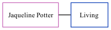

Jaqueline Potter, the wife of Roberts Ian Cornes (the fourth cousin on the father's side of Nigel Horne), and married Roberts in Surrey, England around Nov 19551.
Citations
England & Wales Marriages 1837-2005 - Findmypast
Family Tree

Generated by ged2site. Last updated on Nov 13, 2024